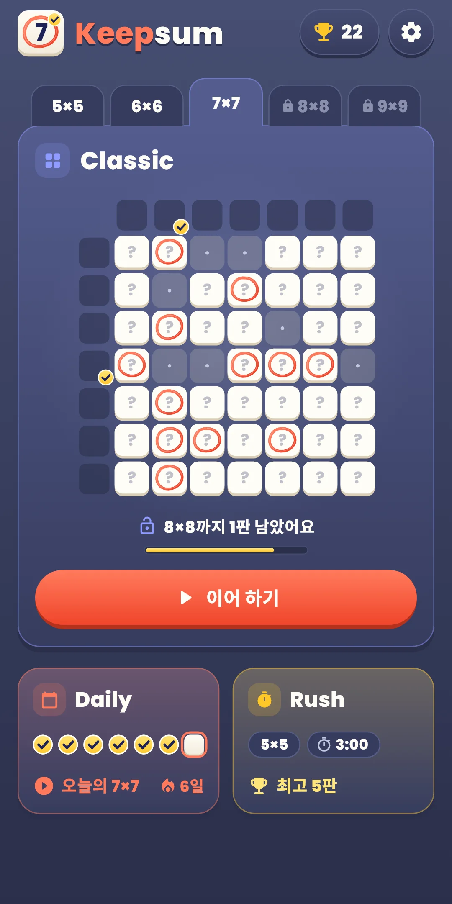
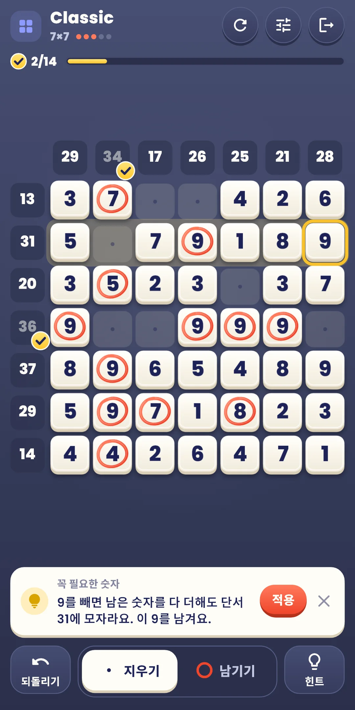
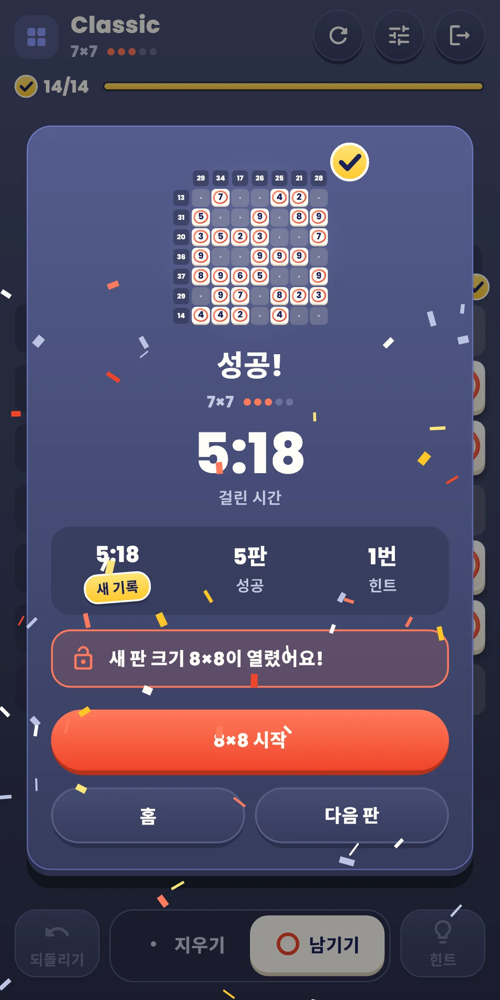
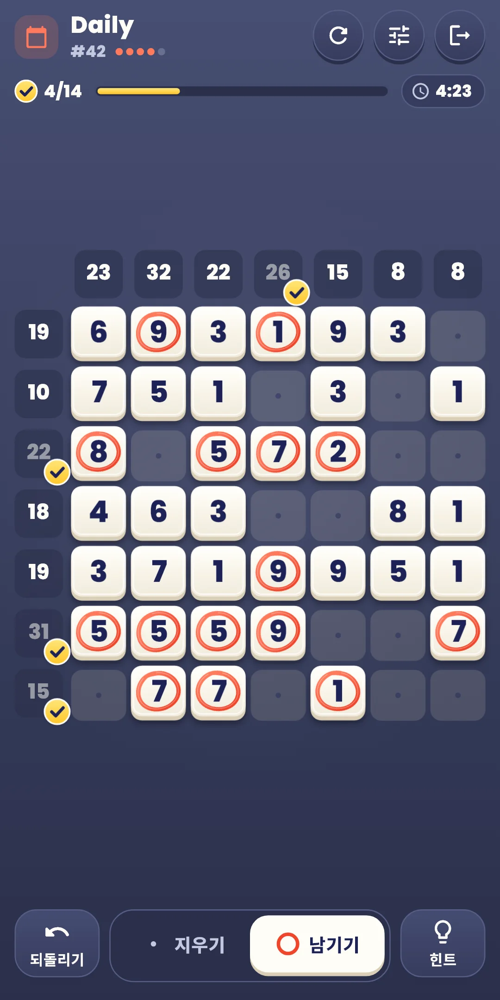
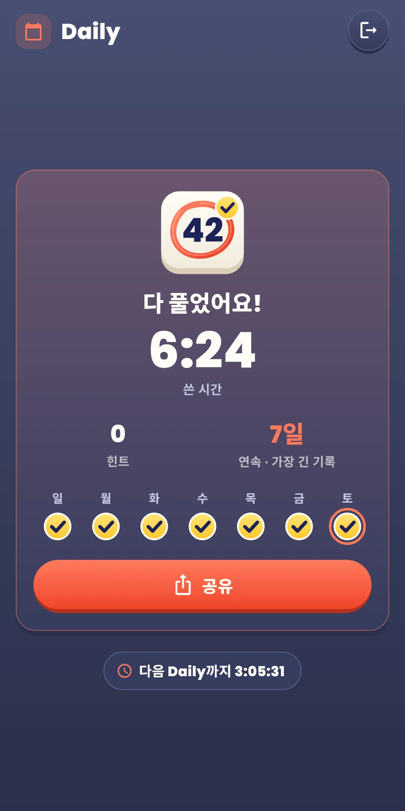
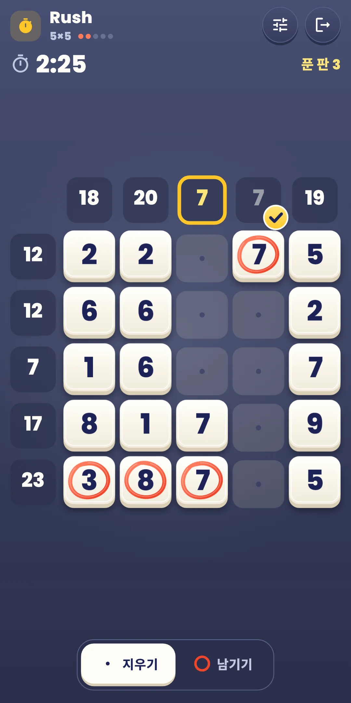
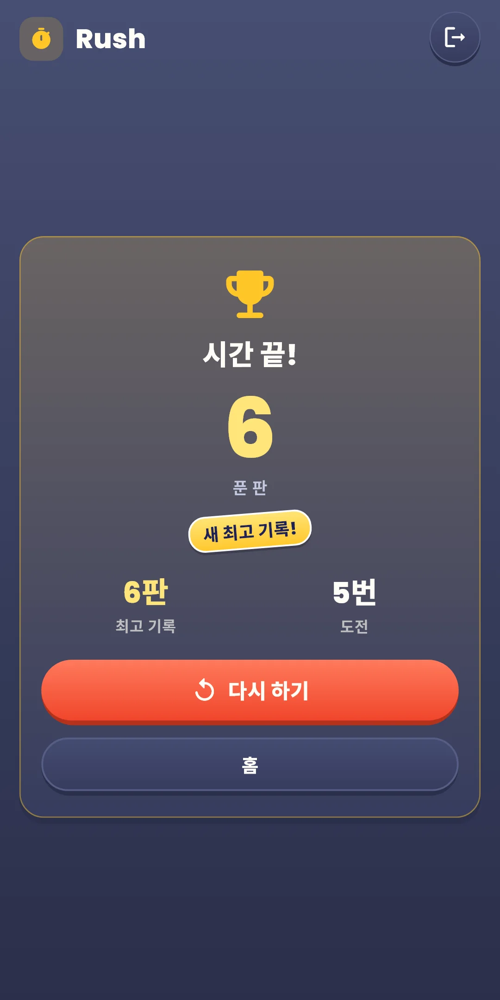
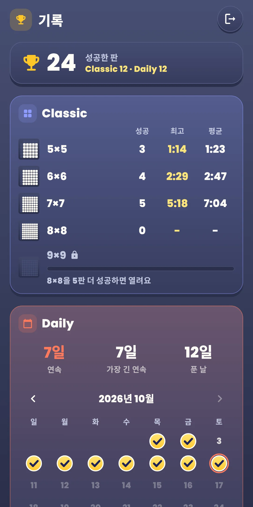

Keepsum
사용 설명서
사용 설명서








| 앱 이름 | Keepsum |
|---|---|
| 버전 | 1.0.0 |
| 개발 | Willee Project |
| 지원 플랫폼 | Android |
숫자가 가득 찬 판에서 남길 숫자와 지울 숫자를 골라, 모든 가로줄과 세로줄의 합을 단서와 맞추는 논리 퍼즐입니다.
아래쪽 단추 줄(Classic·Daily):
| 단추 | 하는 일 |
|---|---|
| 되돌리기 | 마지막으로 한 일을 하나씩 되돌립니다. 횟수 제한이 없습니다 |
| 지우기·남기기 | 칸을 누를 때 쓸 도구를 고릅니다 |
| 힌트 | 다음에 정할 수 있는 칸을 이유와 함께 알려 줍니다. 횟수 제한이 없습니다 |
위쪽 줄 오른쪽의 다시 하기(↻) 단추:
| 고를 것 | 내용 |
|---|---|
| 이 판 처음부터 | 정한 칸을 모두 처음으로 돌립니다. Classic은 걸린 시간과 힌트도 처음부터 세고, Daily는 그날 쓴 시간과 힌트를 이어서 셉니다. 아직 정한 칸이 없으면 흐리게 꺼져 있습니다 |
| 새 판 (Classic만) | 이 판은 그만두고 같은 크기의 다른 판을 풉니다. 그만둔 판은 성공으로 세지 않습니다 |
그 옆의 빠른 설정 단추는 효과음·진동·효과·판 설정을 게임 화면에서 바로 바꾸는 창을 엽니다. 창 위쪽을 누르거나 끌어 내리면 닫힙니다. 맨 오른쪽 끝은 나가기입니다.
Keepsum Daily #12 ✅ 6:41 힌트 1 🔥 5일 연속
#12는 Daily 번호이고, 그 옆은 쓴 시간입니다. 둘째 줄은 쓴 힌트 수, 셋째 줄은 연속 기록입니다(이틀 이상일 때만). 번호는 출시일이 #1이고 하루에 하나씩 늘어나, 번호가 같으면 같은 판입니다. 결과 화면에는 다음 Daily까지 남은 시간이 보입니다.
홈 오른쪽 위의 트로피 단추로 엽니다. 단추에는 성공한 판 수가 보입니다.
홈 오른쪽 위 톱니바퀴로 엽니다. 게임 중에는 위쪽 줄의 빠른 설정 단추로 효과음·진동·효과·판 설정을 바로 바꿀 수 있습니다.
| 항목 | 내용 |
|---|---|
| 효과음 | 칸을 남기고 지울 때, 줄이 맞을 때, 판을 풀었을 때의 소리를 켜고 끕니다. 한 칸을 정해 여러 줄이 이어서 맞으면 소리가 한 음씩 높아집니다 |
| 진동 | 남기기·지우기는 가볍게, 줄이 맞으면 조금 세게 떨립니다. 켜고 끕니다 |
| 효과 줄이기 | 모든 효과를 한 번에 줄입니다. 켜 두는 동안 아래 효과 스위치는 꺼진 모습으로 흐려집니다. 기기의 애니메이션 끄기 설정도 따릅니다 |
| 효과 스위치 | 효과마다 켜고 끕니다. 움직임(동그라미, 지우기, 도장, 물결), 빛(줄 반짝임, 힌트 깜빡임, 줄이 맞거나 판을 다 풀었을 때의 빛), 색종이(판을 다 풀었을 때). 판 전체가 흔들리는 효과는 없습니다 |
| 큰 숫자 | 판의 숫자를 크게 그립니다 |
| 가로·세로줄 표시 | 누르는 칸의 가로줄·세로줄과 두 단서를 밝힙니다. 처음에는 켜져 있습니다 |
| 실수 바로 보기 | 답과 다르게 정한 칸에 빗금 테두리를 칩니다. 처음에는 꺼져 있고, Rush에서는 쓰지 않습니다 |
| 현재 합 보기 | 남긴 숫자의 합을 단서 곁에 작게 보여 줍니다. 처음에는 꺼져 있습니다 |
| 나머지 자동 지우기 | 남긴 숫자로 줄이 맞으면 그 줄의 나머지 칸을 저절로 지웁니다. 처음에는 꺼져 있습니다 |
| 규칙 보기 | 첫 실행 안내를 다시 봅니다 |
| 개인정보 보호 옵션 | 광고 동의를 다시 엽니다. 동의가 필요한 지역(유럽 등)에서만 보입니다 |
| 앱 정보 | 버전, 언어, 이 설명서, 개인정보처리방침, 오픈소스 라이선스 |